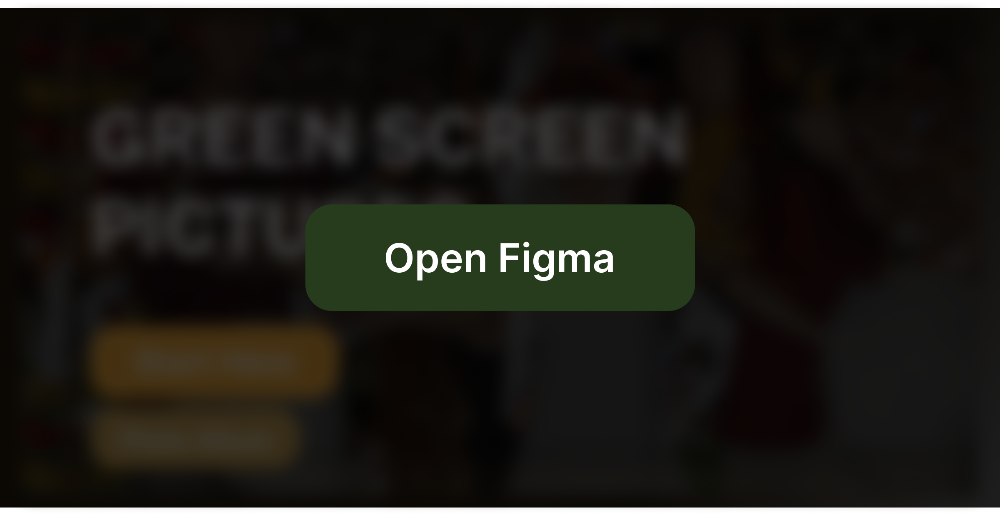
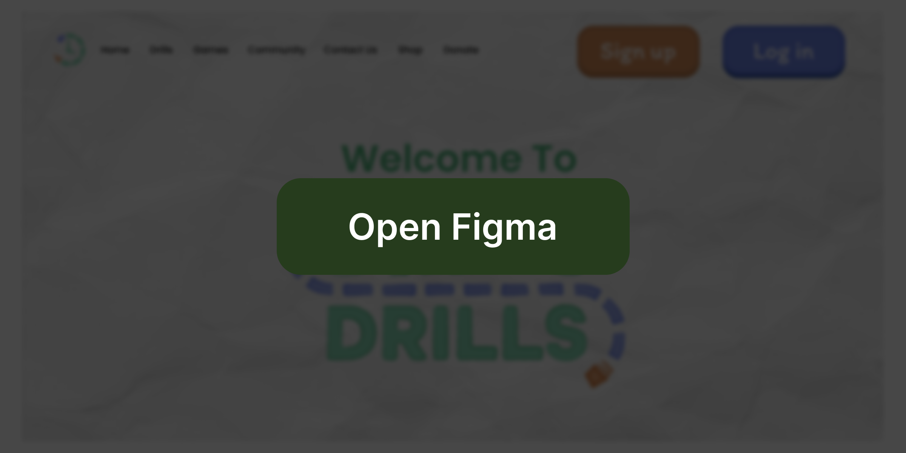
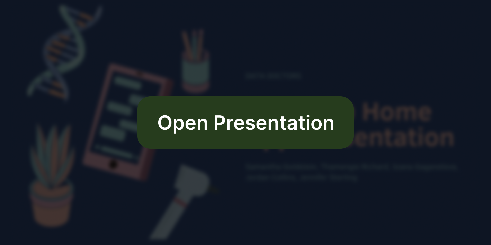
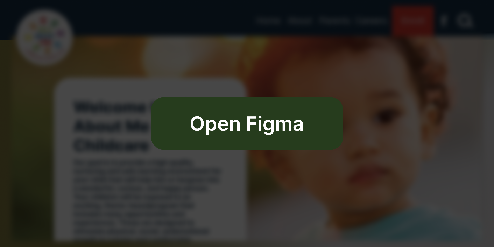
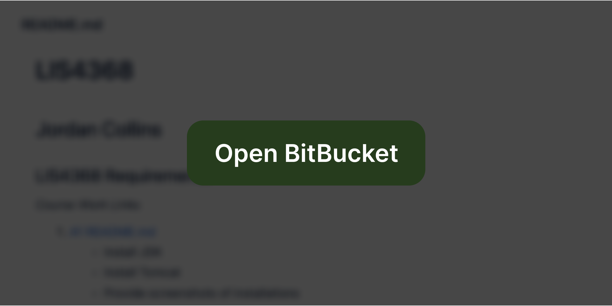
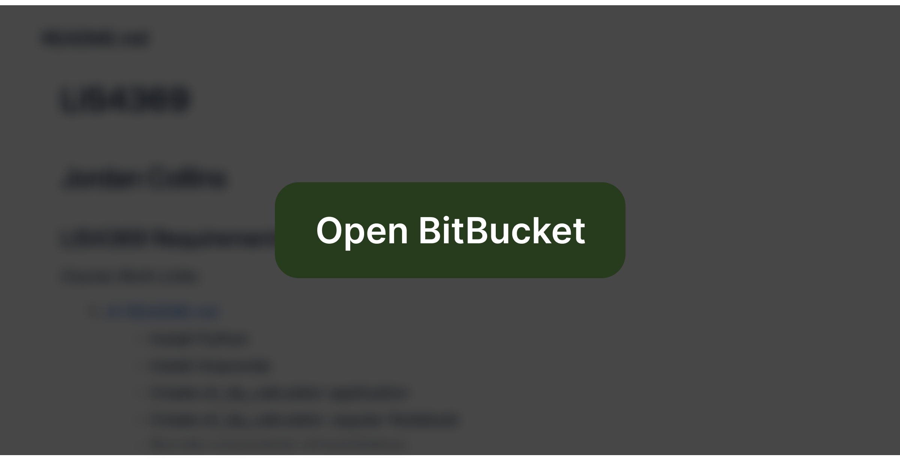
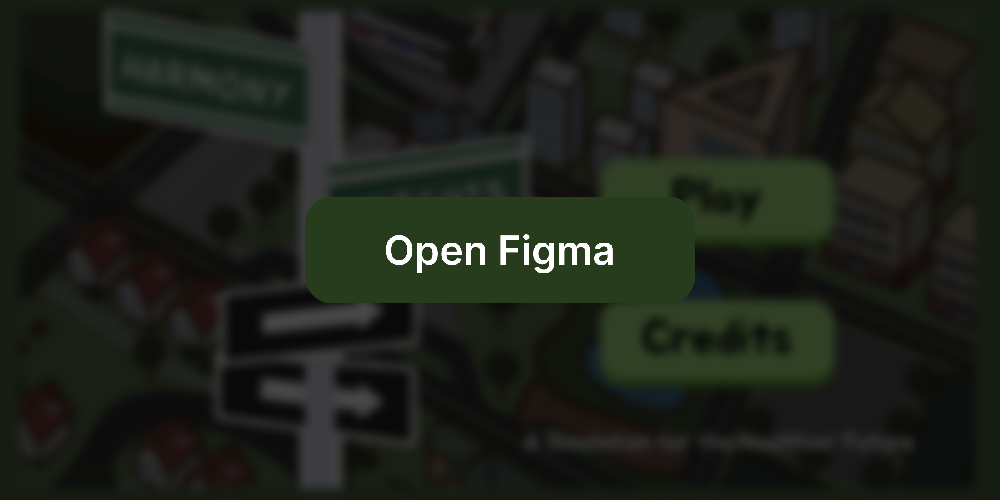
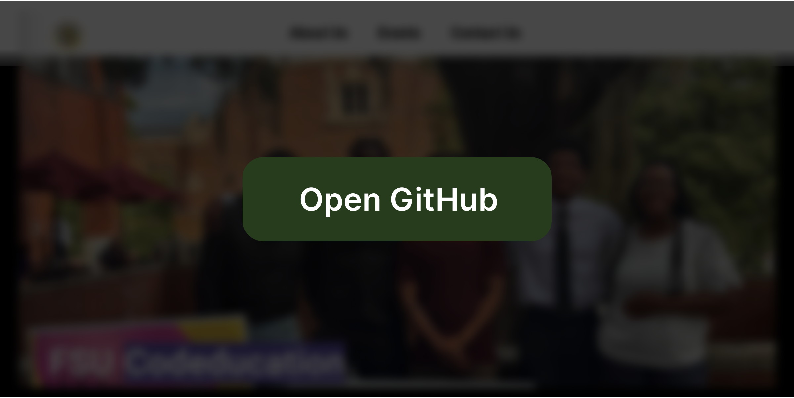
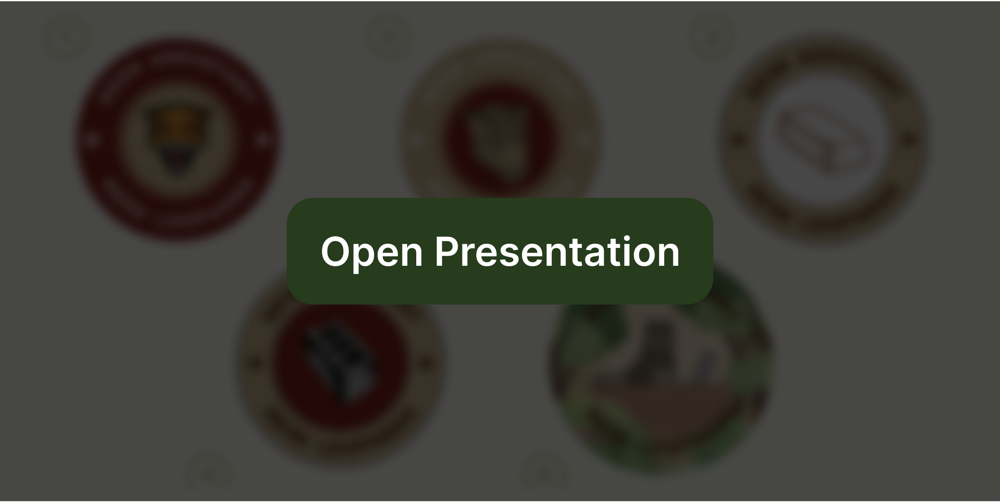

My Projects
Here are a few of the projects I have completed for classes or otherwise.
This includes links to Bitbucket, GitHub, Figma, or just the presentation that was given for them. Click on each project header to
see the individual projects.
You can also just visit the projects page on my LinkedIn that I have provided below for more details.
Design Projects +
User Experience Design #3
For LIS4351, we were tasked to create a redesign for a photobooth for an application our professor used over a decade ago. It was a group of five, but the design and development was completely mine with feedback from my group mates. If you want to run the demo, it is set up to allow you to choose 2 pictures, 2 emails, and 2 printed photos with the FSU logo and Super Mario Galaxy as backgrounds and you can't enter any text. You can also just keep hitting continue if you don't care to run the demo and want to just see what our design looks like.
User Experience Design #4
In this group assignment for LIS4351 we were given a possible startup project from our professor. I was given the games page and the drill practice page as well, but I helped with the design on all pages. It is a bit hard to navigate at some points, but you can simulate a drill and look around all pages.
Mobile App Project Proposal
For Spring 2024, I took Research and Data Analysis in Information Technology, LIS3201, and was tasked to propose a product for a mock company. The product my group and I decided to do was an app for the mock company Health @ Home called the Health @ Home app. We decided to make an app that improves communication between patients and physicians who use Health @ Home. For this project, we had to do research on costs for app creation with the limited budget of Health @ Home and we had to present this app to our "stakeholders".
Information Archetecture Project
In this group assignment for Information Archetecture, LIS3793, we where were tasked with redesigning a website for a business to have better architecture by changing the information scent and spread. I also completely changed the layout and color of the website to be more inviting to new users.

Development Projects +
Advanced Web Applications Development Project
For LIS4368, I used HTML, CSS, JavaScript, and Java to create website for the assignments of the class. In the class, we used Tomcat, Bitbucket, AAMPS, mySQL workbench to complete various assignments about databases and forms. In the Bitbucket link provided, the README shows what each assignment does and leads to the assignment README for more details.
Extensible Enterprise Solutions Project
Currenlty a class I'm taking in Fall 2024, for LIS4369, we are working on different assignments using Python, Anaconda, and eventually RStudio. In the Bitbucket link provided, the README shows what each assignment does and leads to the assignment README for more details.

Extracurricular Projects +
Gator UX Designathon
A 24-hour design sprint hosted by Gator User Design with the theme of the Healthier Future. In this submission, we decided to make a game where you need to make the best choices for Harmony Heights - a small town that has elected you as its mayor. We did not end up winning, but we had fun making this nonetheless.
Codeducation Website
As a the Head Webmaster of the Codeducation club, I am currently working on the website for the club which is being hosted on Github. I completely designed and am coding the Home and Contact pages. As of now, it is still under construction, but anyone is free to look at our code.
Desk Assistant Stickers
In January 2024, my supervisor for University Housing hosted a sticker competition and the winner would be considered for the sticker design that year. The requirement was one design but I made 15 because I had so many ideas. This presentation is very informal! It was sort of a joke but most of the ideas were serious contenders that were made into stickers!
.png)